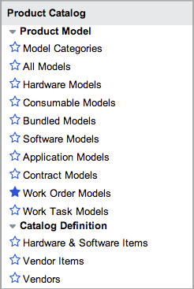

Product Catalog
| |
Note: This article applies to Fuji and earlier releases. For more current information, see Product Catalog at http://docs.servicenow.com
The ServiceNow Wiki is no longer being updated. Visit http://docs.servicenow.com for the latest product documentation. |
1 Overview
The product catalog is a set of information about individual models. Models are specific versions or various configurations of an asset. Models published to the product catalog are automatically published to the service catalog. The service catalog includes information about goods (models) and services. A model may be listed more than once if the model is available from multiple vendors.
Keep the following in mind when working with product catalog:
- A product catalog item can be linked to multiple vendor catalog items or a single model.
- A model can only have one product catalog item.
- A vendor catalog item can only have a single product catalog item.
Asset managers use the product catalog as a centralized repository for model information. A detailed and well-maintained product catalog can coordinate with service catalog, asset, procurement, request, contract, and vendor information.
The product catalog is available starting with the Calgary release. Models are included with the Asset Management application.
2 Menus and Modules
|  |
|
{kind=link}
3 Enhancements
3.1 Eureka
- The following modules are added.
- Contract Models: Lists all contract models.
- Work Order Models: (Requires work management) Lists all work order models available as templates for populating work orders automatically for common activities.
- Work Task Models: (Requires work management) Lists all work task models available as templates for creating work order tasks and part requirements automatically for common activities.
- The glide.cmdb_model.display_name.shorten system property generates shorter display names for models if the name of the model contains the manufacturer name.
- Customizations to the following product catalog tables can be tracked in update sets.
- Hardware Catalog [pc_hardware_cat_item]
- Product Catalog Item [pc_product_cat_item]
- Software Catalog [pc_software_cat_item]
- Vendor Catalog Item [pc_vendor_cat_item]
3.2 Dublin
- The Enforce CI verification field on the Model Category form can prevent ServiceNow from automatically creating assets in a specific model category based on CIs added manually or found with Discovery. This option enables an administrator to review and verify new CIs before adding them as assets.
- The Create Assets button on the Model Category form enables administrators to create assets manually from all configuration items (CIs) in a specific model category that were deferred for verification.
- Administrators can track list price on vendor catalog items and product catalog items.
- Administrators can directly link software vendor items to the software catalog.
- The Rank tier field on the Vendor Catalog Item form displays the overall ranking for the specified vendor's products and services. Use the ranking to decide if the vendor's products should be promoted or discontinued.